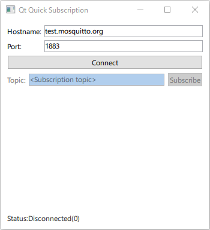

Qt Quick Subscription
Use Qt Quick Controls to create an application that can subscribe to MQTT topics.

Qt Quick Subscription demonstrates how to register QMqttClient as a QML type and use it in a Qt Quick application.
Qt MQTT does not provide a QML API in its current version. However, you can make the C++ classes of the module available to QML.
Creating a Client
Connect to QMqttSubscription::messageReceived( ) to receive all messages sent to the broker:
QmlMqttSubscription::QmlMqttSubscription(QMqttSubscription *s, QmlMqttClient *c) : sub(s) , client(c) { connect(sub, &QMqttSubscription::messageReceived, this, &QmlMqttSubscription::handleMessage); m_topic = sub->topic(); }
Create a QmlMqttClient class with the QMqttClient class as a base class:
QmlMqttClient::QmlMqttClient(QObject *parent) : QObject(parent) { connect(&m_client, &QMqttClient::hostnameChanged, this, &QmlMqttClient::hostnameChanged); connect(&m_client, &QMqttClient::portChanged, this, &QmlMqttClient::portChanged); connect(&m_client, &QMqttClient::stateChanged, this, &QmlMqttClient::stateChanged); }
Use the subscribe() function to create a subscription object:
QmlMqttSubscription* QmlMqttClient::subscribe(const QString &topic) { auto sub = m_client.subscribe(topic, 0); auto result = new QmlMqttSubscription(sub, this); return result; }
Use a QMqttMessage object to store the payload of a received message:
void QmlMqttSubscription::handleMessage(const QMqttMessage &qmsg) { emit messageReceived(qmsg.payload()); }
Registering Classes in QML
In the main.cpp file, load the QML type Main from the module subscription:
QGuiApplication app(argc, argv);
QQmlApplicationEngine engine;
QObject::connect(
&engine, &QQmlApplicationEngine::objectCreationFailed, &app,
[]() { QCoreApplication::exit(EXIT_FAILURE); }, Qt::QueuedConnection);
engine.loadFromModule(u"subscription"_s, u"Main"_s);
Now use the MqttClient type in the Main.qml file to create an MQTT client:
MqttClient {
id: client
hostname: hostnameField.text
port: portField.text
}
Files: